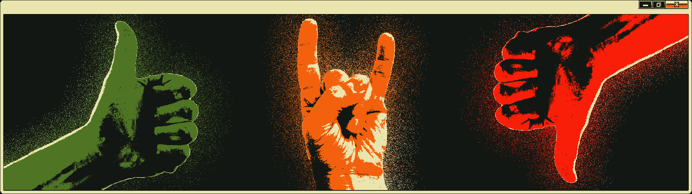

Opinioes
Música
essa parte ainda n ta pronta
""""""arte"""""" I.A.
A arte é uma reflexão interna do sujeito que a cria. I.A. não vai substitir a arte, porque em sua natureza, é incapaz de criar arte.
LLMs conseguem recriar tudo de imagens fotorrealistas a quadros famosos, mas nada disso é arte. Nada disso tem sentido. Nada disso tem sentimento. Nada disso reflete o interior da mente do autor, porque o autor em questão não tem mente. I.A. consegue gerar conteúdo somente pelo entretenimento de baixa qualidade, não muito diferente do conteúdo superficial que está cada vez mais presente em redes sociais.
Eu acho que o conteúdo gerado por I.A. vai coexistir com a arte da mesma forma que o tik tok coexiste com o cinema. Um não anula o outro porque são duas coisas completamente diferentes.
Algumas pessoas alegam que não conseguem desenhar, ou não dispoem dos recursos para criar arte, e a I.A. ajuda eles a se expressarem. Mas você está realmente se expressando quando não é o autor da própria obra? Na página 'Arte' desse site estão várias imagens que eu criei, sem nenhuma experiência com desenho, e conhecimanto básico sobre edição de imagense em um software que não custa nada para usar.
Lei "Felca"
É uma lei extremamente mal planejada, que cria mais problemas que resolve. Existem mil maneiras que eles poderiam ter amenizado um problema que é real e bem sério, mas vigilância constante e censura em massa com certeza não é a melhor delas.
O próprio Felca fez um pronunciamento para explicar a lei mas acabou explicando absolutamente nada. Ele falou das bets e depois fez parceria com globo que apoia bets, agora se acha o intelectual.
Mas no Brasil é assim, com 16 anos você pode ajudar decidir o futuro da nação, mas mario kart é +18 e tigrinho é livre para todas as idades. E linux é ilegal.
Comunismo
Se utilizarmos de uma simples comparação sobre o que é mais correto: Capitalismo ou Comunismo, eu diria que sim, eu sou comunista. Eu acredito que o capitalismo é um sistema econômico que prospera no sofrimento da população. Para um ganhar outro tem que perder. O combustível do motor capitalista é a ganância e o egoísmo, que infelizmente, a humanidade ainda tem em abundância.
Mas em geral, eu não sei se posso me classificar como comunista, já que discordo da teoria de Marx em muitos aspectos. O Marxismo depende muito da boa vontade do ser humano, mas como eu já citei, a ganância e o egoísmo ainda prevalecem. Eu ainda não li nenhum dos trabalhos de Marx, e não sei muito sobre política e economia, mas acredito que entenda o suficiente para formular minhas próprias ideias.
O primeito ponto que eu queria citar, é sobre a revolução comunista. Se uma sociedade comunista vier a existir, não será por meio de uma revolução, e sim por meio de transições pacíficas, muitas delas que já estão ocorrendo. Em todas as sociedades que ocorre uma revolução proletária, uma pessoa adiquire todo o poder sobre a economia, e após isso se torna um ditador, causando mais sofrimento que benefícios à população. Todos esses "comunistas", que idolatram Lenin, Stalin, ou qualquer outro ditador socialista não entendem realmente o que é comunismo. Até hoje nunca houve um país comunista. Todos eles se estagnaram em ditaduras socialistas e cometeram atrocidades com sua população.
Outro ponto que eu discordo da teoria de Marx é sobre a extinção de um sistema de governo. Eu acredito que uma organização para gerir recursos e realizar decisões em prol da sociedade é necessário, de outra maneira ela entraria em colapso. Mas no sistema atual, por mais que democrático, ainda permite que uma única pessoa tenha muito poder, sem garantir que suas ações beneficiem a todos (O que como eu já citei, é impossível em um sistema capitalista).
A abolição do sistema monetário também é algo que é lindo no papel, mas na prática traria muitos problemas. Os recursos básicos como alimentação, saúde, transporte, educação, etc. deveriam ser providos pelo governo de forma gratuita para todas as pessoas. O "dinheiro" deveria ser uma representação do trabalho, não uma moeda de troca. Um trabalhador deveria receber uma quantia de "fichas", por hora trabalhada, e essas fichas não podem ser transferidas de pessoa para pessoa. Ninguém pode tirar do trabalhador o fruto do trabalho.